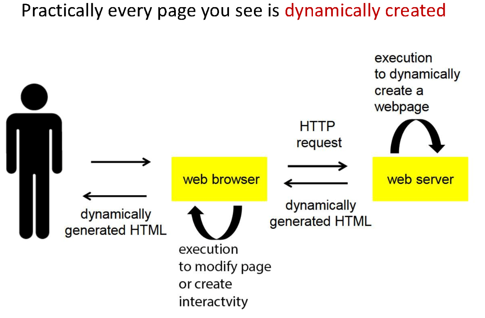
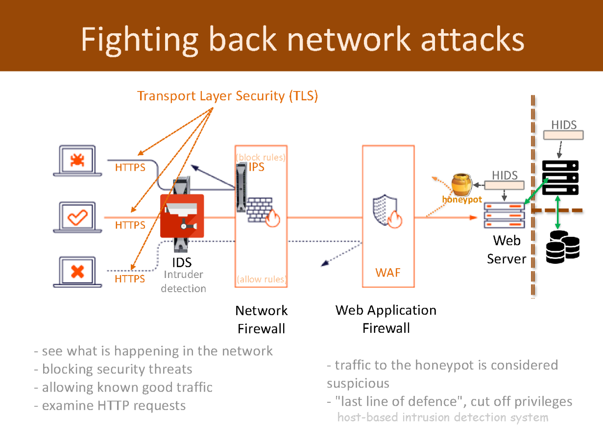
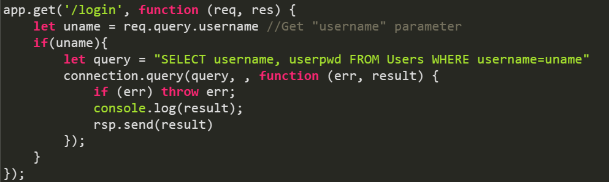

Pears are fruits produced and consumed around the world, growing on a tree and harvested in late summer into mid-autumn. The pear tree and shrub are a species of genus Pyrus, in the family Rosaceae, bearing the pomaceous fruit of the same name. Several species of pears are valued for their edible fruit and juices, while others are cultivated as trees.
Did you know?
There are more than 3,000 types of pears throughout the world. They can range from Anjou to Williams, each varying by size, shape, sweetness, and crispness.
In China, pears are a symbol of immortality. Interestingly, it's believed that sharing pears may disturb the relationship between friends or lovers.
Pears are rich in dietary fibers, vitamin C, and vitamin K. They're also sources of minerals such as copper and potassium. A medium pear has about 100 calories.
Web Code notes
The internet is:
A global scale internetwork of wide area computer networks using TCP/IP protocols
W3C
Stands for World-Wide Web Consortium
W3C is the ones making the Web standards
The internet does NOT have a central operations manager is regulated by organisations
The 4 layer network structure is:
lan
ip
tcp
http
TCP
Transmission Control Protocol
TCP carries reliable services - email (SMTP, IMAP), web (HTTP)
UDP
User Datagram Protocol
carries unreliable services
Colours
Valid colour codes will be formated like the following:- #000000; - it will have a # followed by 6 zero's
Links:
To open a new site from a link such as:
This makes a link for stylesheet:
**Note: also goes in the head of the site
for JS you need to put a different link.
this is:
You typically put this at the end of the 'body' section. Placing the 'script' tag just before the closing '/body' tag is a common practice for improving page load times. It allows the HTML content to load and render first, so users can see your page's content while scripts are loading and executing.
Inputs
'input type="checkbox' - makes a checkbox
'input type="text"'' - makes a text box
'textarea rows="10" cols="50" style="width: 500px; height: 550px;'' - this will make a text area with a width of 500px and height of 550px
CSS elements
font-weight:bold; - makes it bold
text-decoration:none; - no underline for text decoration
text-transform:capitalize - make each word in a text start with a capital letter
CSS rules and tings
you can not use negitive values with padding and that
id is "#"
class is "."
to group selectors you need to separate each selector with a comma
GIT tings
GIT is a distributed version control system
Files in the working directory that Git does not know about because the have not been staged or committed
Git is a free and open source software for distributed version control (tracking changes in any set of files).
JavaScript
JavaScriptJavaScript is heavily object-based
Objects are associative arrays, augmented with prototypes (see below). Object property names are associative array keys: obj.x = 10 and obj["x"] = 10 are equivalent, the dot notation being merely syntactic sugar. Properties and their values can be added, changed, or deleted at run-time. The properties of an object can also be enumerated via a for...in loop.
WHAT IS WEB STORAGE?
Web storage is a means by which web applications can store data locally within the user's browser
Before HTML5 and Web Storage application data had to be stored in cookies
Not just cookies
WHAT IS LOCAL STORAGE?
Local storage is a type of web storage that allows Javascript websites and apps to store and access data right in the browser with no expiration date
WEB STORAGE
JavaScript API
stores user data locally on host running browser put it in silos correlated with web server domain origins
Only web pages from domain D can access D's silo via web storage
localStorage stores data persistently for each web server
sessionStorage stores data sessionally per server per browser instance
WHY WEB STORAGE?
Web storage is more secure
Large amounts of data can be stored locally
Doesn't hinder website performance
Web storage avoids
size limits of cookies
security issues of cookie traffic with web server
WEB STORAGE FUNCTIONS
Support the following functions
setItem(key, value) set key to value
getItem(key) get value of key
removeItem(key) delete key and its value
clear() remove all key/value pairs
key(i) get ith element of array of keys
WEB STORAGE
Web storage stores data sessionally or persistently
Session data stored in browser's volatile memory and is lost when browser closes
HOW DO WE KNOW IF WEB STORAGE IS SUPPORTED?
EXAMPLE OF WEB STORAGE (LOCAL STORAGE)
THE ABOVE EXAMPLES CODE:
EXAMPLE (SESSION STORAGE)
Sessional (See below for further examples)
Example defines 3 functions to use session storage
savewb() updates web storage with key/value
acesswb() display keys and values in web storage
clearwb() removes key/value pairs from web storage
EXAMPLE (SESSION STORAGE)
BROWSER COOKIES
Cookies are small packets of data stored in file space of web users
Cookies attributes:
name
value
domain
path
duration
Webservers ask web clients to store cookies
Cookie attributes are set by web server
COOKIES
Cookies
avoid HTTP's statelessness by storing data on client
are passed in Set-Cookie response and Cookie request headers
are stored in user's filespace or in browser's volatile memory
Cookies can be manipulated by
meta directive in HTML
JavaScript in web page
web server programs (e.g., CGI, servlets, JSP, Node.js)
COOKIE STANDARDS
There used to be 2 cookie standards - Netscape's and RFC 2965.
Combined reformed standard RFC 6265 now governing cookie form
AUTHENTICATION COOKIES
Authentication cookies are commonly used by web servers to authenticate that a user is logged in, and with which account they are logged in. Without the cookie, users would need to authenticate themselves by logging in on each page containing sensitive information that they wish to access. The security of an authentication cookie generally depends on the security of the issuing website and the user's web browser, and on whether the cookie data is encrypted. Security vulnerabilities may allow a cookie's data to be read by an attacker, used to gain access to user data, or used to gain access (with the user's credentials) to the website to which the cookie belongs.
TRACKING COOKIES
Tracking cookies, and especially third-party tracking cookies, are commonly used as ways to compile long-term records of individuals' browsing histories — a potential privacy concern that prompted European[3] and U.S. lawmakers to take action in 2011.[4][5] European law requires that all websites targeting European Union member states gain "informed consent" from users before storing non-essential cookies on their device.
ATTRIBUTES
Optional attributes, which may occur once in any order, are:
Domain domain of validity - defaults to server's hostname
Expires date time when cookie expires
HttpOnly cookie is only to be sent over HTTP
Max-age how many seconds from now onwards to keep cookie
Path defaults to path of document creating cookie
Secure cookie is only to be sent on secure channel (HTTPS)
Max-age higher priority than Expires if both are present
SECURITY
CLIENT
Mostly arise from malicious data or code, malicious code refers to viruses, worms, Trojan horses
SERVER
Includes threats such as, unauthorised eavesdropping, Denial of Services (DoS), and modification of incoming data packets
SECURITY CONSIDERATIONS
How safe is your data?
How safe is your data from others?
Who can you trust on the web?
Which websites are trustworthy? (why)
What makes a trustworthy website/provider?
Legal aspects (responsibility)
What preventative measures are there?

SECURITY WORRIES
Dynamically created web pages involve some processing at the server side which might be based on some untrusted input from the client
This processing involves execution or interpretation based on this input, done in the web application itself, Database or OS
Tell-tale signs that some form of malicious input is going on:
special characters e.g. @ \ . ; < > --
EXAMPLES OF ATTACK TYPES
Passive attacks
Active attacks
Insider attacks
Phishing attacks
Hijack attacks
Spoofing attacks
Exploit attacks
Password attacks
PASSIVE ATTACK
Passive attack attempts to take the information from the system and does not affect any system resources or its operation
ACTIVE ATTACK
Active attacks attempt to change the system resources or affect their usual operation
INSIDER ATTACK
An insider attack is a malicious attack perpetrated on a network or computer system by a person with authorised system access
An insider attack is also known as an insider threat
PHISHING ATTACK
In phishing attack the hacker creates a fake web site that looks exactly like a popular site
HIJACK ATTACK
In a hijack attack, a hacker takes over a session between a user and a server and disconnects the user from the communication
SPOOFING ATTACK
Modifies the source address of the packet
EXPLOIT ATTACK
A Security Vulnerability is a weakness, flaw, or error in a security system that could be exploited to violate the system's security policy
An Exploit is the use of software, data or commands to exploit a vulnerability in a computer system or program to carry out some form of malicious intent
PASSWORD ATTACK
Brute force attack
Dictionary attack
Hybrid attack
BRUTE FORCE ATTACK
Brute force attack is a trial and error method used by application programs to decode encrypted data such as passwords or Data Encryption Standard (DES) keys, through exhaustive effort (using brute force) rather than employing intellectual strategies
DICTIONARY ATTACK
Dictionary attack is a technique for defeating a cipher or authentication mechanism by trying to determine its decryption key or passphrase by trying hundreds or sometimes millions of likely possibilities, such as words in a dictionary
HYBRID ATTACK
Hybrid attack is a combination of dictionary and brute force attack

THREATS
A threat is a potential for violation of security, may or may not happen
Can cause serious damage
Threats might exploit vulnerability to attacks on computer systems
Two popular vulnerability exploits related to web applications:
Cross site scripting
SQL injection
CROSS-SITE SCRIPTING (XSS)
Cross-site scripting - known as XSS
Attacker is able to inject malicious code snippets to get important information, or perform other malicious tasks
CROSS-SITE SCRIPTING (XSS) EXAMPLE
Guestbooks, wikis, blogs, reviews etc. that allow user comments
XSS reflection vulnerability
malicious code supplied to site
subsequently displayed to other users
CROSS-SITE SCRIPTING (XSS) CONT.
Assumption is that all content from one site is equally trusted
hence permitted to interact with other content from that site
Client side scripts, e.g. JavaScript, ActiveX assumed to come from application on site
They're allowed access to cookie details, user session, etc
Need to validate data supplied
CODE INJECTION
Code injection is the exploitation of a computer bug that is caused by processing invalid data
Injection is used by an attacker to introduce (or "inject") code into a vulnerable computer program and change the course of execution
The result of successful code injection can be disastrous, for example by allowing computer worms to propagate
Happens when there is no input validation
Hacker is able to inject his code into your code
SQL INJECTION
An attack in which malicious code is embedded in a poorly designed application and then passed to the backend database
SQL injection is a code injection technique that might destroy your database
SQL injection is one of the most common web hacking techniques
SQL injection is the placement of malicious code in SQL statements, via web page input
SQL injection usually occurs when you ask a user for input, like their username/userid, and instead of a name/id, the user gives you an SQL statement that you will unknowingly run on your database
SQL INJECTION EXAMPLE

CODE INJECTION
Typical example is Code Injection via GET request
JavaScript eval() function accepts a string to be executed as a JavaScript code